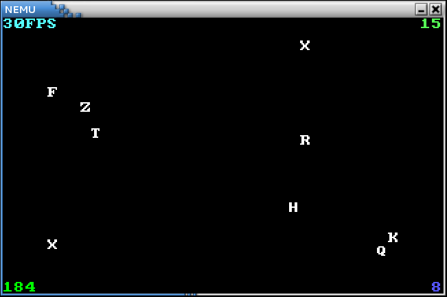

移植打字小游戏
框架代码中的 game 目录下包含两款游戏, 共用的部分存放在 game/src/common 目录下, 游戏各自的逻辑分别存放在 game/src/typing 和 game/src/nemu-pal 中. 可以通过修改 game/Makefile.part 中的 GAME 变量在两个游戏之间切换(需要重新编译).
打字小游戏来源于2013年oslab0的框架代码, 为了配合移植, 代码的结构做了少量调整, 同时去掉了和显存优化相关的部分, 并对浮点数用binary scaling进行了处理.
我们对游戏的初始化部分进行一些说明:
- 程序入口是
lib-common/uclibc/lib/crt1.o中的_start()函数. _start()函数会调用lib-common/uclibc/lib/libc.a中的__uClibc_main()函数, 进行一系列运行时环境相关的初始化工作. 其中会调用ioctl()系统调用来检查stdin, stdout, stderr是否为字符设备. 由于除此之外, 在NEMU中运行的程序不会再调用ioctl(), 为了简单起见, 我们只让内核实现了ioctl()中我们目前需要的功能, 而其它功能并未实现.- 运行时环境初始化结束后, 就会跳转到游戏入口
game/src/common/main.c中的main()函数. init_timer()函数用于设置100Hz的时钟频率, 但由于NEMU中的时钟模拟实现是不可编程的, 而且模拟实现的时钟的默认频率就是100Hz, 故此处的init_timer()函数并没有实际作用.- 调用
init_FLOAT_vfprintf()劫持vfprintf()函数, 之后就可以输出FLOAT类型变量帮助调试. - 在游戏中,
add_irq_handle()是一个人为添加的系统调用, 其系统调用号是0, 用于注册一个中断处理函数. 已经注册的中断处理函数会在相应中断到来的时候被内核调用, 这样游戏代码就可以通过中断来控制游戏的逻辑了. 但在真实的操作系统中, 提供这样的系统调用是非常危险的: 恶意程序可以注册一个陷入死循环的中断处理函数, 由于操作系统处理中断的时候, 处理器一般都处于关中断状态, 若此时陷入了死循环, 操作系统将彻底崩溃. - 使用
Log()宏输出一句话. 在游戏中, 通过Log()宏输出的信息都带有{game}的标签, 方便和kernel中的Log()宏输出区别开来. - 进入游戏逻辑主循环. 整个游戏都在中断的驱动下运行.
在工程目录下运行 make game 命令编译游戏, 然后修改 Makefile 文件, 把 USERPROG 变量设置为 $(game_BIN) , 让编译得到的可执行文件 game 作为NEMU的用户程序来运行.
如果你之前的实现正确, 你将会看到打字游戏的画面, 但你会发现按键后出现system panic的信息, 这是因为kernel中没有对键盘中断进行响应, 认为键盘中断是一个非法的中断.
你需要找出引起system panic的原因, 然后根据你对中断响应过程的理解, 在kernel中添加相应的代码来响应键盘中断.
添加成功后, 按键后不再出现system panic的信息, 但游戏却没有对按键进行响应, 这是因为游戏并没有为键盘中断注册相应的中断处理函数, 你还需要在游戏初始化的时候为游戏注册键盘中断处理函数 keyboard_event() .
这些功能都实现之后, 你会得到一款完整的打字游戏.

游戏是如何工作的 在享受打字小游戏的乐趣的同时, 思考一下, 游戏究竟是如何工作的? 具体来说, 时钟中断到来/某个键被按下之后, 直到游戏逻辑更新(更新屏幕/寻找击中的字符)的这段时间, 计算机硬件(NEMU模拟出的CPU和设备)和软件(kernel和游戏代码)如何相互协助来支持游戏的运行? 这个问题涉及到硬件中断的处理过程, 你需要选择一种中断源(时钟/键盘), 并结合代码, 深入计算机层面来回答这个问题(能多详细就多详细).
游戏中使用了伪随机数生成函数 rand() , 但每次游戏重新开始运行之后, 生成函数产生的伪随机序列都是一样的. 你有办法让它们变得更"随机"吗?
框架代码给出的打字游戏中, game.c里有一段这样的代码:
while (true) {
wait_intr();
cli();
if (now == tick) {
sti();
continue;
}
assert(now < tick);
target = tick; /* now总是小于tick，因此我们需要“追赶”当前的时间 */
sti();
// ......
}
代码中有一处关中断操作, 但执行少量语句之后很快就重新打开中断了. 你能想明白这里的关中断有什么用意吗?
PA4阶段2到此结束.